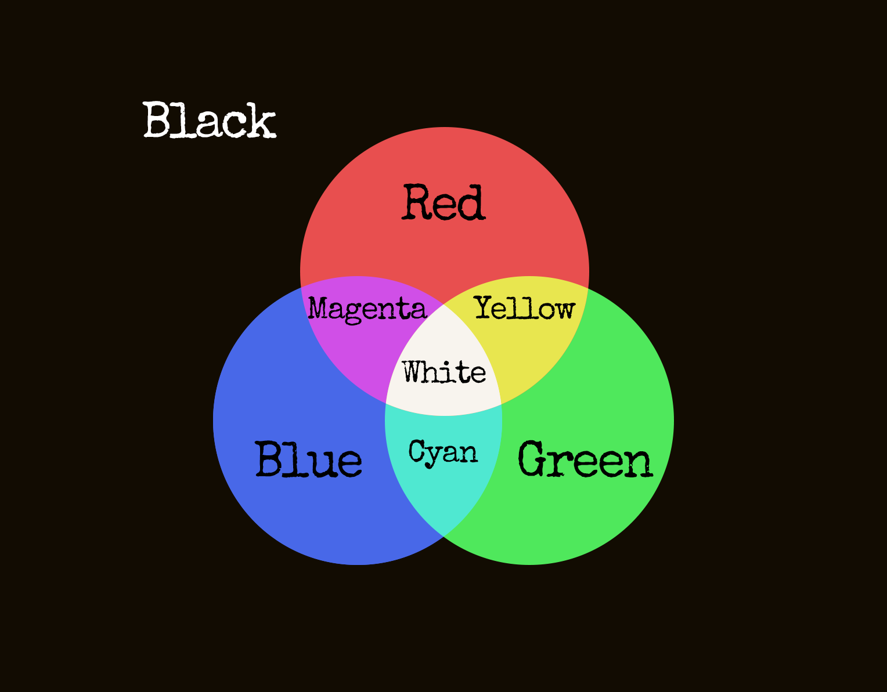

On the Subject of Whiteout
Even the flavour text is white!
This module will initially show a color. When another non-ignored module gets solved, the color will change with playing electronical sound.
You have to press the screen when it’s a Whiteout. Pressing the screen when it’s not a Whiteout or pressing more than once on whiteout will incur a strike.
When all non-ignored modules are solved, the module will go into Whiteout. Pressing the screen while in this state will solve the module.
Calculating Whiteout
Start with initially shown color. Treat it as Current Color.
For every color shown on the module, consider each possible color as a sum of three components: red, blue and green, as shown in the picture below:
For each component present in the color, add that component to the Current Color if the component was absent and subtract it if the component was present.
After the assignment and adjustment, if Current Color is white- it’s a Whiteout.